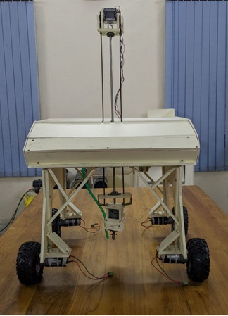
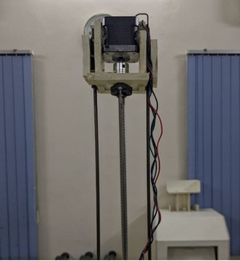
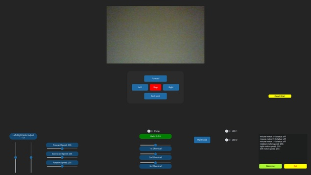
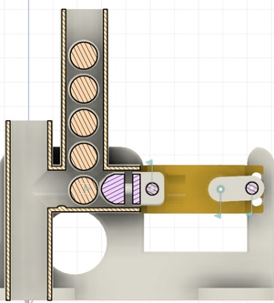
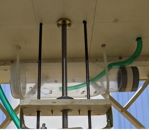
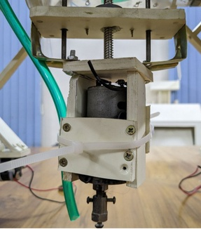
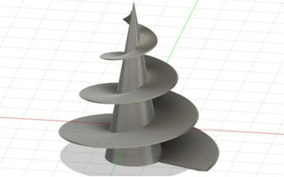
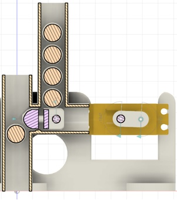
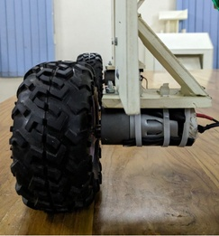

Design & Engineering
The AgRover’s body is made of 0.8mm and 1.2mm PVC board and makes use of trusses to support the whole structure giving it more rigidity. We chose 37GB555 Motors for our main drive system with 130mm diameter offroad wheels.
A paradigm shift in agricultural robotics, this semi-autonomous farming bot is designed to automate crucial farming tasks like seed planting, weed removal, and crop care, enhanced with environmental sensors for data-driven decision-making.
Conceptual design — exploring the future of automated farming.

The AgRover’s body is made of 0.8mm and 1.2mm PVC board and makes use of trusses to support the whole structure giving it more rigidity. We chose 37GB555 Motors for our main drive system with 130mm diameter offroad wheels.

A single DOF reconfigurable manipulator with specialized end effectors for precision seed planting and weed removal. The system is designed for accuracy and adaptability in various farming tasks.

A user-friendly GUI developed with CustomTkinter allows for intuitive control of movement, speed, seed planting, and spraying operations, with plans for future camera integration for real-time monitoring.
This research endeavors to introduce a paradigm shift in agricultural robotics by designing, developing, and operationalizing a semi-autonomous farming bot. Our objective is to develop a multifunctional farming bot that automates crucial farming tasks like seed planting, weed removal and crop care. This bot will be enhanced with environmental sensors, including humidity, soil temperature, and soil moisture sensors, enabling real-time monitoring and data-driven decision-making.
The significance of this research lies in its potential to transform conventional farming practices. By introducing a semi-autonomous farming bot, an innovation in agricultural robotics, we aim to mitigate labor shortages, reduce operational costs, and promote sustainable crop management.
This was an outcome of our project for "Introduction to Robotics Lab". This project is currently in the conceptual phase. The details presented here outline the proposed design, methodology, and potential impact. A small amount has been applied in real life, but it's important to not over-estimate anything at this stage.
The goal is to bridge the gap between traditional farming and technology, providing a potential solution to agricultural challenges and paving the way for an efficient and sustainable future.
The semi-autonomous farming robot is designed with a sturdy chassis, wheels, and motors for movement and navigation. The robot consists of one DOF reconfigurable manipulator to remove weeds and plant seeds. It also includes a pesticide and fertilizer sprayer mechanism for precise pesticide application.
A single DOF manipulator that will move up and down, allowing it to reach closer to the crops or the soil. It uses a stepper motor controlled by a L298 Motor driver. This allows for connecting various end effectors.

A specialized end effector with a precision drill for planting seeds. A shaft pushes seeds through a smooth, narrow tunnel for accurate and consistent spacing, crucial for optimal plant growth.

The AgRover can pour any kinds of fertilizer based on the needs of the crops using a drip irrigation method. This prevents over-fertilization, which is a major source of water pollution.



